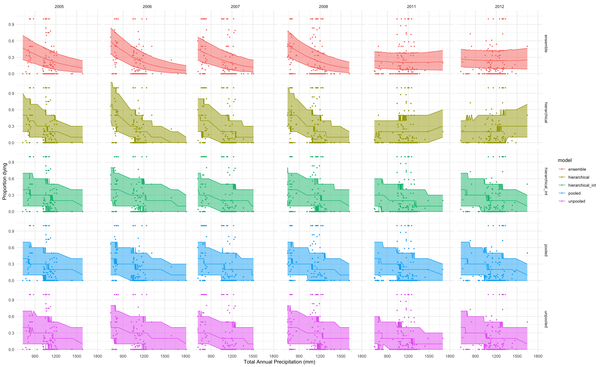

Lauren Talluto
05.12.2024
Important to assess modelling goals before comparing models.
So why do we fit models?
Important to assess modelling goals before comparing models.
So why do we fit models?
Rule of thumb: out-of-sample performance is the gold standard!
\[ H = -\mathbb{E}\left [\log \left (p \right) \right ] = -\sum_{i=1}^n p_i\log(p_i) \]
Imagine a series of flips of a weighted coin:
pr_unfair = c(0.8, 0.2)
flips = sample(c("Heads", "Tails"), size = 20, replace = TRUE, prob = pr_unfair)
table(flips)
## flips
## Heads Tails
## 17 3A fair coin has high entropy; each face has a probability of \(\frac{1}{2}\), this (or any) sequence cannot help us predict the next roll
An unfair coin has lower entropy; if we know which face is weighted, we can predict easily what the next outcome will be.
The best model in a set is the one that maximizes the entropy of the residuals
After applying the model, the value of the residuals should tell us as little as possible about the next residual
\[ D_{KL} = \sum_{i=1}^n p_i\log \left (\frac{p_i}{q_i} \right) \]
This tells us how much entropy we get from assuming our unfair coin is fair. This is a bad model: the prob of heads is really 0.8, but we assumed it was \(\frac{1}{2}\).
\[ D_{KL} = \sum_{i=1}^n p_i\log \left (\frac{p_i}{q_i} \right) \]
We suspect our coin is weighted from the flips, but we don’t know the probs
Instead we estimate them by performing an experiment (flipping the coin) and building a model
We have two competing hypotheses: call them \(\theta_{map}\) and \(\theta_{fair}\)
\[ \begin{aligned} D_{KL, \theta_{map}} & = \sum_{i=1}^n \theta_{true}\log \frac{\theta_{true}}{\theta_{map}} \\ D_{KL, \theta_{fair}} & = \sum_{i=1}^n \theta_{true}\log \frac{\theta_{true}}{\theta_{fair}} \\ \end{aligned} \]
log_likelihood = function(probH, flips)
sum(dbinom(sum(flips == "Heads"), length(flips), prob = probH, log=TRUE))
log_posterior = function(probH, flips) {
# a priori we expect 50/50 heads and tails, and I give the prior a bit of weight because most coins are fair
log_likelihood(probH, flips) + dbeta(probH, 15, 15, log=TRUE)
}
map = optim(pr_fair[1], method="Brent", log_posterior, flips=flips,
control=list(fnscale=-1), lower=0, upper=1)
# mle with no prior, for comparison
mle = optim(pr_fair[1], method="Brent", log_likelihood, flips=flips,
control=list(fnscale=-1), lower=0, upper=1)
prs_map = c(map$par, 1-map$par)
prs_mle = c(mle$par, 1-mle$par)
round(rbind(
observed = table(flips)/sum(table(flips)),
map = prs_map,
mle = prs_mle
), 2)
## Heads Tails
## observed 0.85 0.15
## map 0.65 0.35
## mle 0.85 0.15\[ D = -2 \sum \log pr \left(x | \theta \right) \]
Dmap = -2 * log_likelihood(prs_map[1], flips)
Dfair = -2 * log_likelihood(pr_fair[1], flips)
Dmle = -2 * log_likelihood(prs_mle[1], flips)
round(c(map = Dmap,mle = Dmle, fair = Dfair), 3)
## map mle fair
## 7.016 2.831 13.648\[ \mathrm{AIC} = 2k - D\left [ \mathbb{E} \left (\theta \right ) \right ] \]
rstan::optimizinglibrary(rstan)
map_up = optimizing(tsuga_unpooled, standat)
map_p = optimizing(tsuga_pooled, standat)
k1 = sum(grepl("^[a|b]", names(map_p$par))) # 2 parameters
k2 = sum(grepl("^[a|b]", names(map_up$par))) # 17 parameters
aic = c(2*k1 - map_up$par["deviance"], 2*k2 - map_p$par["deviance"])
res = rbind(aic, aic - min(aic)); rownames(res) = c("AIC", "delta"); colnames(res) = c("Pooled", "Unpooled")
res
## Pooled Unpooled
## AIC -5840.80002 -5865.183
## delta 24.38348 0.000\[ \begin{aligned} p_D & = \mathbb{E} \left[ D \left (\theta \right ) \right] - D\left [ \mathbb{E} \left (\theta \right ) \right ] \\ \mathrm{DIC} &= D\left [ \mathbb{E} \left (\theta \right ) \right ] + 2p_D \end{aligned} \]
fit_up = sampling(tsuga_unpooled, standat, iter=5000, refresh=0, chains=1)
fit_p = sampling(tsuga_pooled, standat, iter=5000, refresh=0, chains=1)
fit_pp = sampling(tsuga_ppool, standat, iter=5000, refresh=0, chains=1)
fit_ipp = sampling(tsuga_int_ppool, standat, iter=5000, refresh=0, chains=1)
## note for the hierarchical model, a MAP is hard to find,
## here we use the min deviance as a quick and dirty estimate
## a better estimate is to compute the mean of all parameters, then
## compute the deviance with those values
pd = c(Pooled = mean(as.matrix(fit_p, pars="deviance")) - map_up$par["deviance"],
Unpooled = mean(as.matrix(fit_up, pars="deviance")) - map_p$par["deviance"],
Hierarchical = mean(as.matrix(fit_pp, pars="deviance")) - min(as.matrix(fit_pp, pars="deviance")),
Hierarchical_intercept = mean(as.matrix(fit_ipp, pars="deviance")) - min(as.matrix(fit_ipp, pars="deviance")))
dic = 1*pd + c(map_up$par["deviance"], map_p$par["deviance"], min(as.matrix(fit_pp, pars="deviance")),
min(as.matrix(fit_ipp, pars="deviance")))
dic = rbind(dic, dic - min(dic)); rownames(dic) = c("DIC", "delta")
dic
## Pooled.deviance Unpooled.deviance Hierarchical Hierarchical_intercept
## DIC 5901.1422 5860.5243 5754.922 5872.5218
## delta 146.2202 105.6022 0.000 117.5998\[ \mathrm{lppd} = \sum_{i=1}^n \log \frac{1}{S} \sum_{j=1}^S pr(y_i | \theta_j) \]
Package loo can estimate LOO-IC and WAIC for us. All
that is needed is to compute the lpd (log pointwise density) in your
Stan model.
generated quantities {
vector [n] loglik; // vector, one per data point, because this is the pointwise density
for (i in 1:n) {
// here change binomial to whatever likelihood function applies to the model
// lpmf: "log probability mass function"
// for continuous distributions, use lpdf, e.g., normal_lpdf
loglik[i] = binomial_lpmf(died[i] | n_trees[i], p[i]);
}
}## put all models into a list for convenience when doing repeated operations
fits = list(unpooled=fit_up, pooled=fit_p, hierarchical=fit_pp, hierarchical_int=fit_ipp)
## get a loo object for each model
loos = lapply(fits, loo, pars="loglik")
loos$unpooled
##
## Computed from 2500 by 1406 log-likelihood matrix.
##
## Estimate SE
## elpd_loo -2965.9 134.3
## p_loo 64.1 7.4
## looic 5931.8 268.5
## ------
## MCSE of elpd_loo is NA.
## MCSE and ESS estimates assume MCMC draws (r_eff in [0.4, 1.4]).
##
## Pareto k diagnostic values:
## Count Pct. Min. ESS
## (-Inf, 0.7] (good) 1400 99.6% 74
## (0.7, 1] (bad) 5 0.4% <NA>
## (1, Inf) (very bad) 1 0.1% <NA>
## See help('pareto-k-diagnostic') for details.print(loo_compare(loos), simplify = FALSE)
## elpd_diff se_diff elpd_loo se_elpd_loo p_loo se_p_loo
## hierarchical 0.0 0.0 -2917.0 132.9 76.1 8.8
## pooled -38.5 24.0 -2955.5 130.4 9.7 1.1
## hierarchical_int -43.6 21.8 -2960.7 133.3 48.1 5.2
## unpooled -48.9 23.0 -2965.9 134.3 64.1 7.4
## looic se_looic
## hierarchical 5834.0 265.9
## pooled 5911.0 260.7
## hierarchical_int 5921.3 266.5
## unpooled 5931.8 268.5loo’s elpd_diff, can omit the
\(-\frac{1}{2}\)\[ w_i = \frac{e^{-\frac{1}{2}\Delta \mathrm{*IC}_i}} {\sum_{j=1}^m e^{-\frac{1}{2}\Delta \mathrm{*IC}_j}} \]
looics = sapply(loos, function(x) x$estimates['looic', 'Estimate'])
delta_looic = looics - min(looics)
wi = exp(-0.5*delta_looic) / sum(exp(-0.5*delta_looic))
round(rbind(looic = looics, dlooic = delta_looic, weight = wi), 2)
## unpooled pooled hierarchical hierarchical_int
## looic 5931.85 5910.96 5834.02 5921.32
## dlooic 97.83 76.94 0.00 87.29
## weight 0.00 0.00 1.00 0.00elpd from LOOgenerated quantities {
vector [n] loglik; // vector, one per data point, because this is the pointwise density
int ppd_died [n]; // predicted number of trees dying at each point in the original dataset
for (i in 1:n) {
// here change binomial to whatever likelihood function applies to the model
// lpmf: "log probability mass function"
// for continuous distributions, use lpdf, e.g., normal_lpdf
loglik[i] = binomial_lpmf(died[i] | n_trees[i], p[i]);
ppd_died[i] = binomial_rng(10, p[i]); // here I give a ppd assuming a sample size of 10 trees
}
}ppd = lapply(fits, as.matrix, pars="ppd_died")
weighted_ppd = Map(`*`, ppd, wts)
avg_predictions = Reduce(`+`, weighted_ppd)
## now get some quantile intervals, put them alongside the original values and the temperature
quants = lapply(ppd, function(x) cbind(data.table(t(apply(x, 2, quantile, c(0.5, 0.05, 0.95)))), tsuga))
quants$ensemble = cbind(data.table(t(apply(avg_predictions, 2, quantile, c(0.5, 0.05, 0.95)))), tsuga)
quants = rbindlist(quants, idcol="model")
colnames(quants)[2:4] = c("median", "lower", "upper")
pl = ggplot(quants[year %in% c(2005:2008, 2011:2012)], aes(x=tot_annual_pp, y = median/10, colour = model)) +
geom_line() +
geom_ribbon(aes(x=tot_annual_pp, ymin= lower/10, ymax=upper/10, fill = model), alpha = 0.5, show.legend = FALSE) +
facet_grid(model ~ year) + theme_minimal() + geom_point(aes(x=tot_annual_pp, y = died/n), size=0.6) +
xlab("Total Annual Precipitation (mm)") + ylab("Proportion dying")
